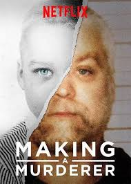

Making a Murderer

Hotel Cecil

Homicidio Incosta del Sol
Escena del crimen: El caso Wanninkhof-Carabantes
2021 - 16+ - Documental
En 1999, alguien le arrebata la vida a Rocío Wanninkhof. Sospechan de la expareja de su madre, Dolores Vázquez. ¿Habrá sido ella? Una segunda víctima revelará la verdad.
Trailes
Series
El caso Wanninkhof-Carabantes
El caso Wanninkhof-Carabantes es uno de los errores judiciales más notorios en España, marcado por prejuicios sociales, presión mediática y fallos en la investigación. A continuación, se presenta un resumen detallado de los acontecimientos:
El 9 de octubre de 1999, Rocío Wanninkhof, de 19 años, desapareció en La Cala de Mijas, Málaga, mientras regresaba a su casa. Su cadáver fue hallado el 2 de noviembre, con múltiples puñaladas y signos de intento de incineración. La investigación inicial careció de pruebas concluyentes, pero la presión mediática y social llevó a la detención de Dolores Vázquez, expareja de la madre de Rocío.
En septiembre de 2001, Dolores Vázquez fue condenada a 15 años y un día de prisión por un jurado popular, a pesar de la falta de pruebas físicas que la vincularan al crimen. La sentencia se basó en suposiciones y prejuicios relacionados con su orientación sexual y su relación pasada con la madre de la víctima. En 2002, el Tribunal Superior de Justicia de Andalucía anuló la condena por "insuficiente motivación" y ordenó repetir el juicio. Vázquez fue liberada tras 17 meses en prisión.
A pesar de su exoneración, Dolores Vázquez no recibió una indemnización adecuada ni una disculpa oficial del Estado español. En 2008, el Ministerio de Justicia ofreció una compensación de 120.000 euros, que Vázquez consideró insuficiente. En 2025, el Ayuntamiento de Betanzos, su localidad natal, le otorgó el premio Úrsula Meléndez de Texeda en reconocimiento a la injusticia sufrida y su resiliencia. Durante la ceremonia, Vázquez expresó su deseo de recibir una disculpa formal del Gobierno.
Imagenes Reales
Historia
Tambien Podrían gustarte:


2025@ Est.Cine Peliculas Online